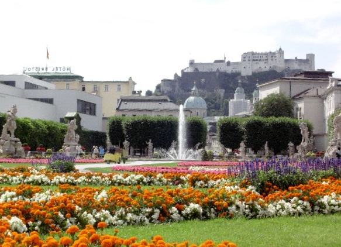
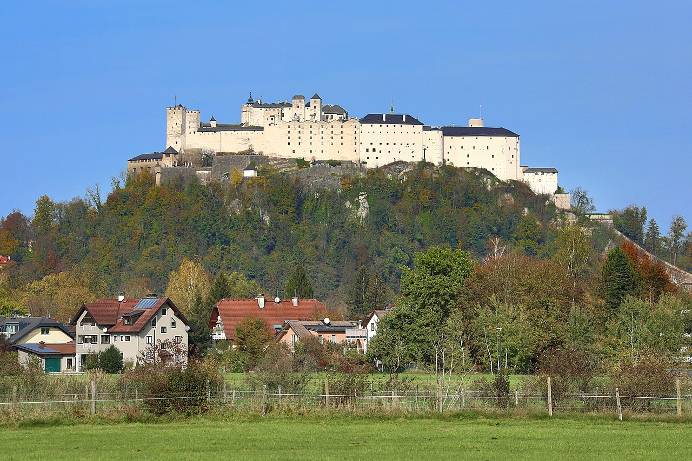
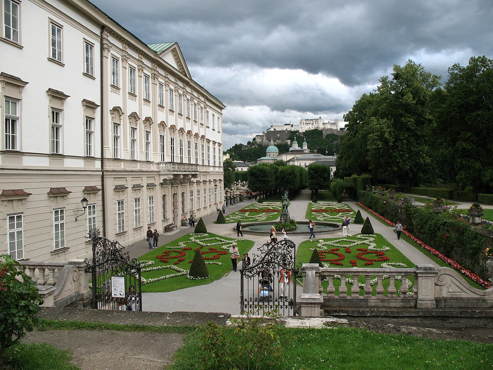
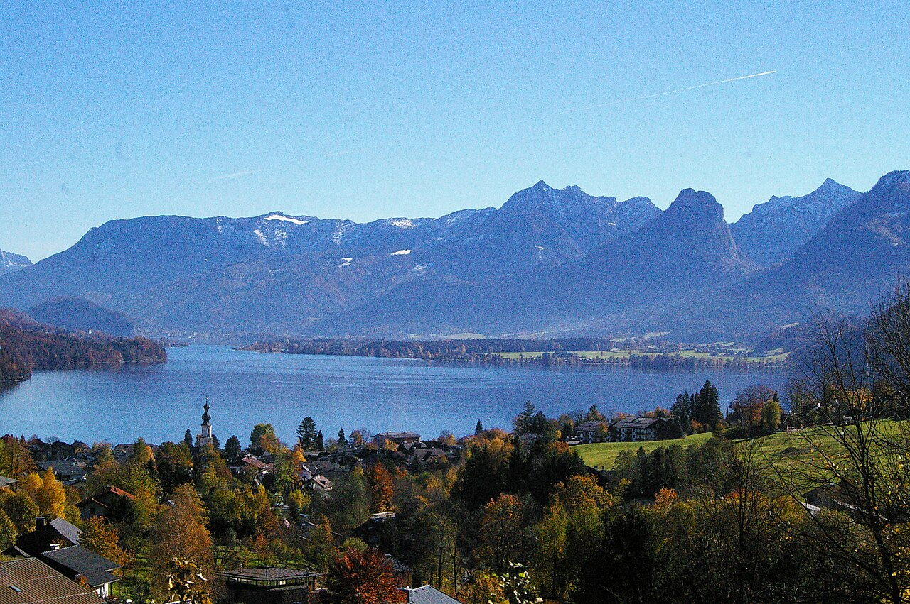
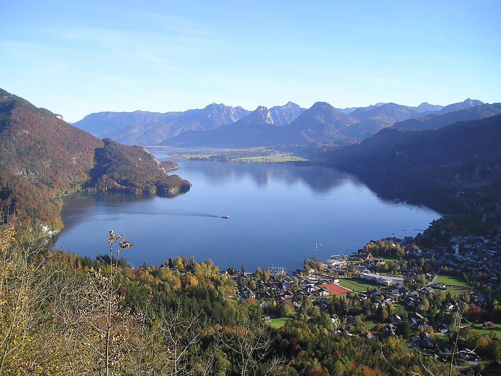
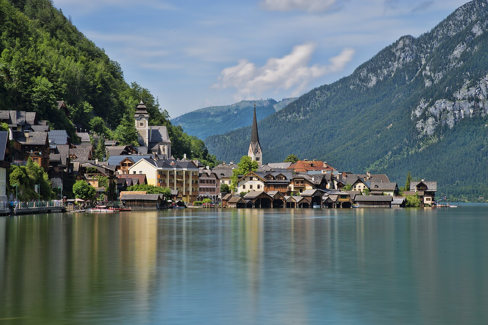
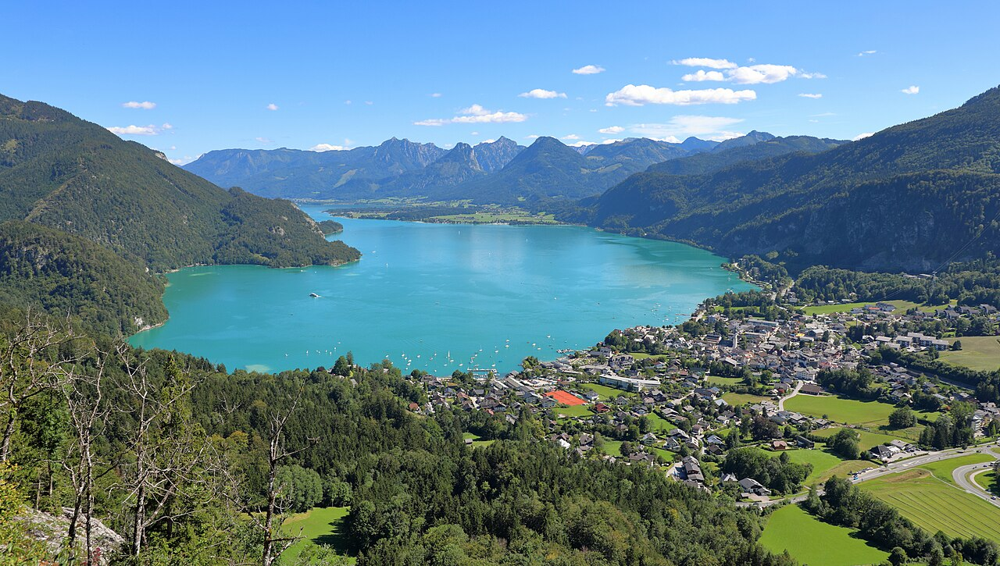
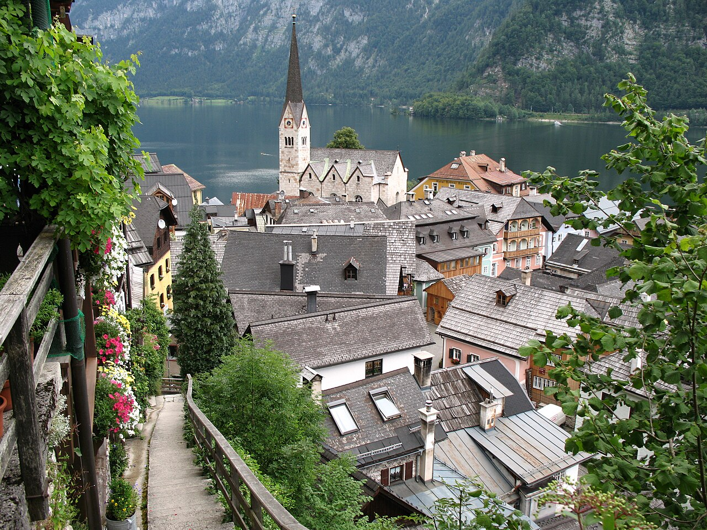
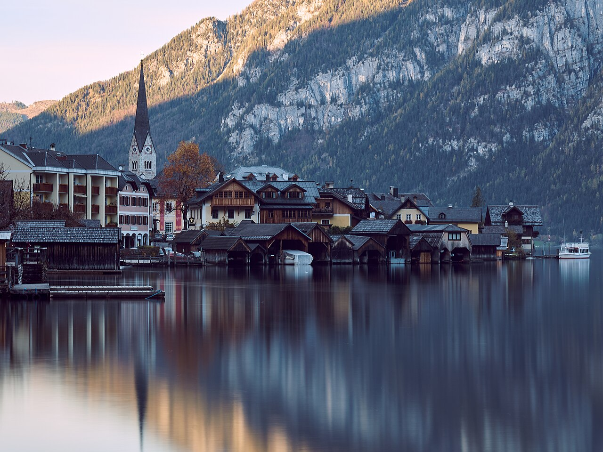

Pro 2 (ty + máma) · čt 13. 8. → po 17. 8. 2026 · vlakem z Prahy
2 dny na cestu + 3 plné dny na místě · dvě základny: Salcburk + jezero
Chceš raději začít v pá 14. 8.? Nech vše stejné — jen posuň každý den o jeden dopředu (návrat út 18. 8.). Vlaky jezdí oba týdny stejně.





Rodiště Wolfganga Amadea Mozarta a jedno z nejkrásnějších barokních měst Evropy — historické centrum je na seznamu UNESCO. Nad městem se tyčí pevnost Hohensalzburg z roku 1077, jedna z největších dochovaných středověkých pevností v Evropě, kam vyjedete lanovkou za výhledem na město i Alpy. Dole čeká nákupní ulička Getreidegasse, katedrála a barokní Mirabellské zahrady proslavené filmem Za zvuků hudby.

Malebné jezero v srdci Solné komory s tyrkysovou vodou a horami kolem. St. Gilgen je půvabné městečko spojené s Mozartovou rodinou (narodila se tu jeho matka) a nabízí lanovku Zwölferhorn. Přes jezero se lodí dostanete do poutního St. Wolfgang, odkud vyjíždí historická ozubnicová dráha Schafbergbahn na vrchol Schafbergu (1 783 m) s pohádkovým výhledem na okolní jezera.


Pohádková vesnička nalepená mezi jezero a strmé hory — jedno z nejfotografovanějších míst Rakouska a součást památky UNESCO. Zdejší solné doly patří k nejstarším na světě (těží se tu přes 7 000 let) a dají se navštívit. Nad vesnicí je vyhlídka Skywalk a přístup na náhorní plošinu Dachstein s ledovými jeskyněmi.
| Jízdenka | Detaily & kde koupit |
|---|---|
| Vlak Praha ⇄ SalcburkKUP HNED | ÖBB/ČD EuroCity + Railjet, 1 přestup v Linci, ~5 h 30 každým směrem. Kup levné předprodejní jízdné (Sparschiene) — rychle mizí. Koupit na ÖBB Koupit na ČD |
| Postbus 150 (místní) | Salcburk ⇄ St. Gilgen, ~50 min. U řidiče nebo v aplikaci ÖBB. Použiješ dvakrát (tam v den 3, zpět v den 5). Spojení ÖBB |
| Loď po Wolfgangsee | St. Gilgen ⇄ St. Wolfgang, kup na palubě u kapitána (je i celodenní jízdenka). Jízdní řády |
| Ozubnicová dráha SchafbergbahnEXTRA | Zpáteční na vrchol. Jezdí denně 25. 4.–1. 11. 2026. Na srpen si rezervuj čas online — je oblíbená. Nebo lanovka Zwölferhorn v St. Gilgen. Rezervovat Schafbergbahn |
Všechny hotely níže mají twin — dvě oddělené postele (Zweibettzimmer), ověřeno živě na Booking.com pro naše datum, se zrušením zdarma tam, kde to jde. Tip: na Booking zaškrtni filtr „Preferovaný typ postelí → Dvě oddělené postele".
Twin (dvě oddělené postele), vše pěšky do centra:
| Kolpinghaus SommerHostelSNÍDANĚ 2 oddělené postele, snídaně v ceně, hodnocení 8,0, 2,4 km, zrušení zdarma. Rezervovat twin |
| Pension ElisabethHODNOCENÍ 8,6 Oddělené postele, 1,6 km od centra — skvělé hodnocení. Rezervovat twin |
| Four Points by Sheraton (Messe) 2 oddělené postele + balkon, hodnocení 8,4 (hotelový standard, 4,3 km). Rezervovat twin |
Twin u vody — u Hallstattského jezera (na Wolfgangsee je twin skoro vyprodaný):
| Seehotel am HallstätterseeTWIN U VODY 2 oddělené postele, přímo u jezera (Obertraun), 8,8, snídaně, zrušení zdarma. Hallstatt hned vedle. Rezervovat twin |
| Heritage Hotel HallstattV HALLSTATTU 2 oddělené postele, přímo v historickém Hallstattu, 8,7, snídaně. Rezervovat twin |
Chceš zůstat na Wolfgangsee? Twin je tam na naše datum skoro vyprodaný — rezervuj hned a do poznámky napiš „Bitte Zweibettzimmer" (zkus Hotel Stroblerhof ve Stroblu).